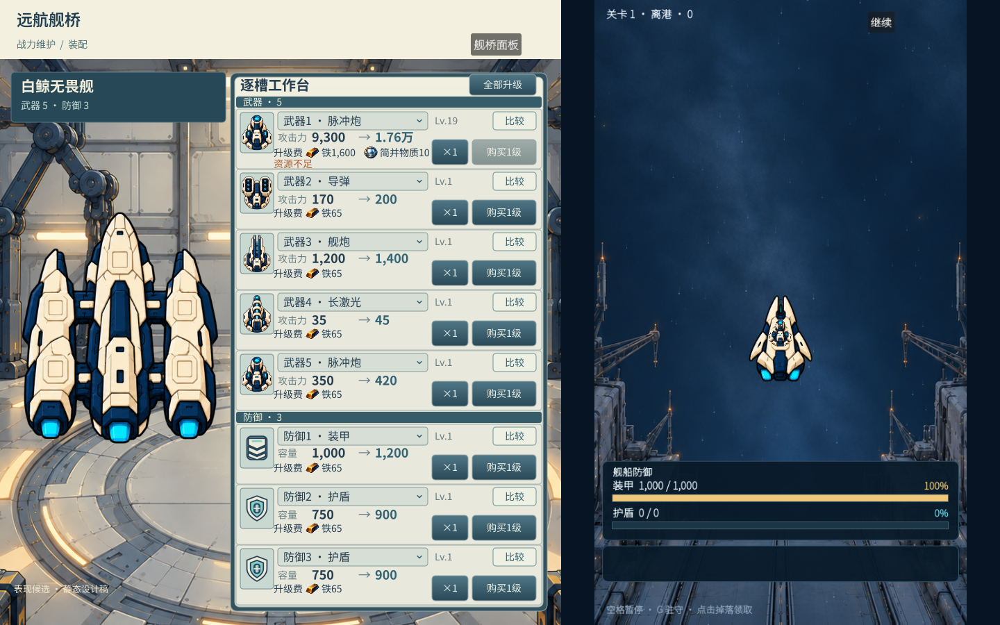

打开原尺寸 1440×900 图 ↗当前实机左操作区 x0–808，公共顶轨 y0–65，旧装备实机延至 y85；反应堆和星球从 y65 起拥有内区背景。装备新稿 x332–788 台体是未来目标，不是当前运行节点或公共顶轨已改。原 main 底色在不透明场景后不可见。
战场容器 x808–1440，投影 x855.875–1392.125，宽 536.25、高 900，scale 0.9375。两侧各 47.875 为公共净空；导航位于 x813–850，不得挤占有效战斗投影或用厚框填空。
按完整整屏看信息焦点 → 读到文字真实墨迹边缘 → 核字与可见漆面/图标的距离 → 核普通、选中、焦点、禁用字底。局部参数相同不等于视觉一致；改后仍要重看各页整图。
按字形墨迹到真实控件漆面、内框和图标的可见边缘看，不以 Label/Control Rect 代替。短键两侧至少留出完整中文字宽的半字空间；名称与数值以组级 8–12px 感知节奏组织；逐槽 87px 行内属性墨迹到邻近可见边缘，原组样本为上下约 2.6–5.5px 且近似对称，正式字体须重新量。上/下净空允许因汉字重心和描边作 1–2px 光学校正。装备攻击力、反应堆等级/费用、星球页签和抽屉标题由各原组在当前结构内落实；公共源只定义字体角色和状态字色。
现行代码源：src/ui/bridge_theme.gd::public_font() 为公共 Noto Sans SC 450 + embolden 0.8；zone_shell.gd 顶标题 20、资源 16、导航 12；装备/反应堆各自建立 400/500/600 变体，星球独立 Theme 默认 17。拟议字体优先以正式 Noto 400/500/600 权重替代公共 450+embolden 的合成厚重感，仍在现有 BridgeTheme 一处收敛；以上是待审设计，不是运行参数已改。背景被挡保留待办。装备 9c 四图是静态设计且原审中；旧 9e 仅历史可见区实机，星球 ac5 已被用户退回品质方向；不可混称同版运行验收。